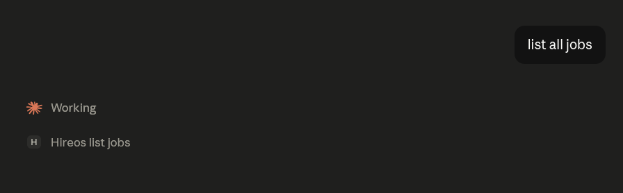

hireos_list_jobs against my live pipeline. No HireOS tab open.The temptation I avoided
HireOS is a job-hunt pipeline with a pile of agents behind it. The obvious next feature was a chat box in the corner of the dashboard — ask questions about your pipeline, get answers. Every app is growing one right now.
It's the wrong build. A chat box in my app means I maintain a conversation UI, a streaming transport, a context manager, a tool-dispatch loop and a model integration — all to reimplement, worse, a client the user already has open in another tab. And it strands the capability inside my app: it can't compose with anything else the user is doing.
The Model Context Protocol inverts it. I don't build a client. I expose HireOS as tools, and the user brings whatever agent they like — Claude Desktop, Claude Code, claude.ai. My job shrinks to the part only I can do: describing my domain well enough that a model can act in it.
v1: twenty tools over stdio
The server is TypeScript, and it is deliberately a client of the existing HireOS REST API — zero backend changes. That constraint kept it honest: if a workflow couldn't be expressed against the public API, it didn't belong in the tool surface either.
| Tool | Does |
|---|---|
hireos_track_job | Track a job from a URL or pasted JD text |
hireos_list_jobs | List the pipeline, filtered by status / platform / priority |
hireos_assess_fit | 7-axis fit assessment |
hireos_generate_resume | Tailored, ATS-optimized resume |
hireos_edit_resume | One-off natural-language edit to the markdown |
hireos_run_ats | (Re)score a resume version's PDF |
hireos_get_insights | AI narrative + activity stats |
…plus a dozen more for cover letters, deep company research, interview prep, LinkedIn outreach, the story bank and pipeline analytics. There's also a resource, hireos://jobs, that hands the agent the current pipeline as JSON without a tool call.
The thing nobody warns you about: the tool description is the API contract now. Not the JSON schema — the prose. A model decides whether to call hireos_assess_fit or hireos_get_job by reading a sentence I wrote. Ambiguous descriptions don't throw errors; they cause the agent to quietly pick the wrong tool and produce a confidently wrong answer. I spent more time editing those sentences than writing the handlers, and I'd do it again.
The hard problem: tools that take longer than the agent will wait
MCP is request/response. hireos_generate_resume kicks off a three-pass LLM pipeline that takes 30 to 60 seconds. There is no native "job accepted, poll me later" pattern in the protocol, and an agent that's been blocking on a tool call for a minute is a bad experience in any client.
What I do instead: the long-running tools block and poll internally for up to about 50 seconds. If the backend agent is still working when that budget expires, the tool doesn't fail and it doesn't hang — it returns:
{ "status": "still_processing",
"hint": "Resume generation is still running.
Call hireos_list_resumes in a moment to collect it." }That's not elegant, and I want to be clear that it's a workaround rather than a design. But it's the right shape of workaround, because it hands the model something it's actually good at: a next action, in words. The agent reads the hint, waits, calls the read tool, gets the resume. The async gap gets papered over by the one component in the system that can improvise.
Designing tools for an LLM caller is different from designing them for a program. A program needs a status code. A model needs to be told what to do next, in the response body. Error strings are prompts.
v2: multi-tenant OAuth, because single-user didn't scale to "anyone else"
v1 put your HireOS email and password in the MCP client's env block. Fine for me on my machine. Completely unshippable to anyone else — plaintext credentials in a config file, one server per user, stdio only.
So v2 is an HTTP MCP server, deployed on Fly, with OAuth 2.0 and dynamic client registration. It's live at https://hireos-mcp.fly.dev/mcp, and any HireOS user can add it to claude.ai as a custom connector:
- Settings → Connectors → Add custom connector.
- Paste the URL. Leave Client ID and Secret blank — the server supports dynamic registration, so the client registers itself.
- Click Connect. A HireOS login page opens. Sign in with your own account.
- Every tool now acts on your pipeline.
That last line is the whole point of v2. The tool surface is identical; the identity is per-user. Internally the server exchanges the OAuth grant for a HireOS JWT, caches it, and re-authenticates transparently when it expires — so a connector that sat idle for a month just works on the next call instead of throwing a 401 at the model.
Things that bit me
- Dynamic client registration is not optional if you want to be a claude.ai custom connector. I initially built the classic pre-registered client-ID flow and it was a dead end — the connector UI expects to register itself.
- Token expiry has to be invisible. A 401 surfacing to the model produces a hallucinated apology, not a re-auth. The server has to handle it below the tool layer.
- Scraping a JD from a URL inside a tool call is slow and login-walled sites will beat you. The tool takes
jd_textas an alternative, and the description says so, so the model falls back on its own.
Why this matters beyond one job-hunt app
My day job is production GenAI for insurance — FastMCP services, PydanticAI agents, multi-tenant schemas — and none of it can be shown to anyone. hireos-mcp is the same architecture on a problem I own outright: an existing REST product, a tool layer over it, per-tenant identity, and an agent as the front end.
The broader bet is that "app with an API" is becoming "app with a tool surface," and the two are not the same artifact. An API is designed for a programmer who read the docs. A tool surface is designed for a model that reads only your descriptions, has no memory of your conventions, and will confidently do the wrong thing if you're vague. That's a writing problem as much as an engineering one, which is not what I expected going in.